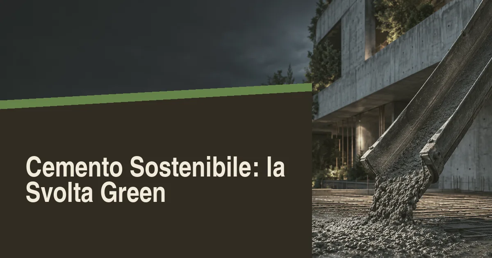

Perché il cemento è un problema climatico
Se l'industria del cemento fosse un Paese, sarebbe il terzo emettitore mondiale dopo Cina e Stati Uniti: la produzione del legante più usato al mondo genera circa il 7-8% delle emissioni globali di CO₂. Il nodo tecnico è il clinker, il semi-prodotto ottenuto cuocendo calcare e argilla a 1.450°C: la decarbonatazione del calcare rilascia CO₂ per via chimica (circa il 60% delle emissioni) e il combustibile per il forno aggiunge il resto. Ogni tonnellata di clinker emette indicativamente 0,8-0,9 tonnellate di CO₂, e in un metro cubo di calcestruzzo ordinario l'impronta complessiva si aggira su 250-350 kg di CO₂ equivalente.
La buona notizia è che la filiera italiana — tra le più avanzate d'Europa per uso di combustibili alternativi e riduzione del clinker — ha già imboccato la strada della decarbonizzazione, spinta da tre fattori: il costo crescente delle quote ETS europee, la richiesta dei grandi committenti (infrastrutture e fondi immobiliari) di materiali con EPD, la dichiarazione ambientale di prodotto, e l'obbligo dei criteri ambientali minimi negli appalti pubblici. Per imprese e progettisti, il "cemento sostenibile" non è più una nicchia da green marketing: è una voce di capitolato.
I cementi a basso carbonio disponibili oggi
La leva principale è la riduzione del contenuto di clinker, sostituito con altri costituenti attivi. La norma sui cementi comuni prevede da anni diverse famiglie, e l'offerta dei cementifici italiani si sta spostando rapidamente verso i tipi a minor impronta:
- CEM II con loppa d'altoforno, pozzolana o calcare: clinker ridotto al 65-80%, emissioni inferiori del 20-30% rispetto al CEM I puro, prestazioni ormai equivalenti per la gran parte delle applicazioni strutturali.
- CEM III con loppa d'altoforno: clinker fino al 20-35%, taglio delle emissioni del 50-60%, ottima durabilità in ambiente marino e aggressivo; maturazione più lenta, da gestire in cantiere.
- Cementi con argilla calcinata (tecnologia LC3): la frontiera più promettente, che usa argille abbondanti in natura e promette riduzioni del 30-40% senza dipendere dai sottoprodotti dell'industria siderurgica, destinati a scarseggiare con la decarbonizzazione dell'acciaio.
- Cementi da forni elettrificati e con cattura del carbonio: in fase pilota in Europa, con i primi impianti dimostrativi di carbon capture annunciati anche per la filiera italiana; impatto commerciale atteso nel prossimo decennio.
| Tipo di legante | Clinker residuo | Riduzione CO₂ | Impieghi tipici |
|---|---|---|---|
| CEM I (Portland puro) | 95-100% | Riferimento | Strutture ad alta resistenza iniziale |
| CEM II (loppa, pozzolana, calcare) | 65-80% | -20/-30% | Uso generale, strutture ordinarie |
| CEM III (loppa d'altoforno) | 20-35% | -50/-60% | Getti massicci, ambienti aggressivi e marini |
| Argilla calcinata (LC3) | 50-70% | -30/-40% | Uso strutturale generale, filiera in crescita |
| Geopolimeri / alcali-attivati | 0% | Fino a -80% | Applicazioni speciali e prefabbricati |
Il punto pratico per il progettista: specificare un CEM II o CEM III invece del CEM I non richiede cambi di progetto nella maggior parte dei casi — classi di resistenza e norme di riferimento restano le stesse — ma può ridurre del 30-50% l'impronta carbonica dell'opera a costo quasi nullo. È la singola decisione di capitolato con il miglior rapporto tra impatto ambientale evitato e sforzo richiesto.
Calcestruzzi riciclati e leganti alternativi
La seconda leva riguarda gli aggregati: il calcestruzzo da demolizione, trattato in impianti autorizzati, diventa aggregato riciclato che può sostituire quote crescenti di sabbia e ghiaia vergini nei getti non strutturali e, con miscele certificate, anche in quelli strutturali. In Italia la filiera del riciclo da C&D (costruzione e demolizione) recupera già decine di milioni di tonnellate l'anno di materiali, e il calcestruzzo con aggregati riciclati è una realtà commerciale nelle principali città, con sovrapprezzi contenuti e prestazioni validabili in laboratorio.
Sul fronte più innovativo, i geopolimeri e i leganti alcali-attivati eliminano del tutto il clinker usando scarti industriali (ceneri volanti, loppa) attivati chimicamente: riduzioni di CO₂ fino all'80%, resistenze chimiche superiori, ma standard ancora in via di consolidamento e filiere produttive limitate. Più maturi i calcestruzzi con CO₂ mineralizzata, che iniettano anidride carbonica catturata direttamente nel getto fresco, dove resta stoccata permanentemente migliorando anche la resistenza meccanica: tecnologia già commerciale in Nord America e in arrivo sui mercati europei. Resta infine il confronto con il materiale che stocca carbonio invece di emetterlo: l'edilizia in legno e XLAM, competitiva sul residenziale fino al multipiano.
CAM edilizia: i criteri ambientali che cambiano gli appalti
Il driver normativo decisivo sono i Criteri Ambientali Minimi (CAM) per l'edilizia, adottati con decreto ministeriale e resi cogenti per le stazioni appaltanti dal Codice dei contratti pubblici (D.Lgs 36/2023). Tra i requisiti che incidono direttamente sui materiali: l'obbligo di impiegare materiali recuperati o riciclati per almeno il 5% del peso del conglomerato cementizio e di opere analoghe, il divieto di materiali contenenti sostanze pericolose, la richiesta di vetro e laterizi con quote di riciclato, e la premialità per i prodotti con EPD e contenuto di riciclato certificato.
Per le imprese, l'effetto pratico è che la documentazione ambientale dei materiali — schede tecniche, EPD, certificati di contenuto riciclato — è diventata parte integrante dell'offerta e del conto sal. Le centrali di betonaggio si sono attrezzate con miscele certificate CAM, e i direttori lavori richiedono sempre più spesso la tracciabilità del calcestruzzo fornito. Chi non presidia questa documentazione rischia sospensioni dei pagamenti e contestazioni in collaudo.
Cosa cambia in cantiere: costi, logistica e controlli
Sul piano economico, la fotografia del 2026 è questa: i calcestruzzi con cementi a clinker ridotto costano il 5-15% in più del prodotto standard, con differenze che si assottigliano di anno in anno; gli aggregati riciclati sono in parità di prezzo o leggermente convenienti dove la filiera di recupero è vicina al cantiere; i leganti innovativi restano più cari e vanno valutati progetto per progetto. In un'opera civile media, il costo dei materiali cementizi pesa per il 10-15% del totale: un sovrapprezzo del 10% sul getto si traduce in un 1-1,5% sul costo complessivo dell'opera, una cifra che i committenti attenti alla sostenibilità considerano ormai sostenibile.
In cantiere cambiano tre abitudini. Primo, la stagionatura: i cementi con loppa maturano più lentamente nei primi giorni e richiedono stagionatura umida più accurata, pena fessurazioni superficiali. Secondo, i controlli di accettazione, che devono registrare anche le caratteristiche ambientali dichiarate del fornitore. Terzo, la programmazione: le miscele speciali vanno ordinate con preavviso, perché non tutte le centrali le tengono a stock. Sono adeguamenti gestibili, che le imprese più strutturate hanno già assorbito nei propri cicli qualità.
«La decarbonizzazione del calcestruzzo non arriverà da un singolo materiale miracoloso, ma dalla somma di molte scelte: meno clinker, più riciclo, migliore progettazione delle miscele e strutture dimensionate senza sprechi.»
CAM e normativa: cosa impone il settore pubblico
La leva più potente per la diffusione dei materiali low-carbon non è il mercato privato ma la commessa pubblica: i Criteri Ambientali Minimi (CAM) per l'edilizia impongono alle stazioni appaltanti requisiti ambientali obbligatori nelle gare, tra cui contenuti minimi di materiale riciclato in molte categorie di prodotti e il rispetto di criteri su emissioni e certificazioni ambientali di processo. Per il calcestruzzo, i CAM spingono verso miscele con costituenti secondari — loppa d'altoforno, ceneri volanti, filler riciclati — e verso la documentazione ambientale di prodotto (EPD) come prova delle prestazioni dichiarate. La direzione europea va nella stessa direzione: il regolamento sui prodotti da costruzione rafforzato e la tassonomia delle attività sostenibili stanno rendendo la dichiarazione dell'impronta di carbonio un attributo commerciale, non solo etico.
L'effetto a catena è già visibile: i grandi produttori italiani hanno convertito quote crescenti di produzione verso cementi a ridotto contenuto di clinker — la componente che concentra la gran parte delle emissioni del processo — e le centrali di betonaggio offrono miscele «a impronta ridotta» con EPD dedicata per i progetti che devono rendicontare la sostenibilità. Per le imprese, presidiare questa documentazione significa essere pronti quando i requisiti ambientali entreranno stabilmente anche nei capitolati privati: già oggi i grandi committenti — logistica, retail, data center — chiedono la rendicontazione del carbonio incorporato nelle strutture.
Costi e disponibilità sul mercato italiano
La domanda che arriva dal cantiere è sempre la stessa: quanto costa di più, e si trova? La risposta 2026: le miscele a ridotto contenuto di clinker con prestazioni equivalenti alle ordinarie hanno un sovrapprezzo contenuto, tipicamente del 5-15% sul costo del calcestruzzo fornito, che sul costo complessivo della struttura si riduce a punti percentuali minimi — il cls vale una quota limitata del costo totale dell'opera. Le soluzioni più innovative (geopolimeri, leganti alternativi puri) restano invece prodotti di nicchia con costi significativamente più alti e disponibilità limitata a fornitori specializzati.
| Soluzione | Riduzione CO₂ indicativa | Sovrapprezzo | Disponibilità |
|---|---|---|---|
| Cementi a ridotto clinker (loppa, pozzolana, calcare) | 20-50% | +5-15% | Ampia, centri di betonaggio ordinari |
| Cls con aggregati riciclati da demolizione | Variabile (circolarità) | Da pari a +10% | In crescita, dipende dalle filiere locali |
| Geopolimeri e leganti alternativi | Fino a 70-80% | +30-100% | Nicchia, fornitori specializzati |
| Calcestruzzi a ritenzione di carbonio (carbon cure) | Mineralizzazione CO₂ | +10-25% | Sperimentale/pilota in Italia |
Il consiglio operativo per progettisti e imprese: specificare le prestazioni ambientali in capitolato — EPD, contenuto di clinker, resistenze garantite — e lasciare al fornitore la scelta della miscela equivalente. Le certificazioni di resistenza e durabilità seguono le stesse regole del calcestruzzo ordinario: il materiale low-carbon maturo non richiede deroghe né semplificazioni, e il sovrapprezzo si ripaga quando il progetto deve rendicontare la sostenibilità a bandi, committenti o finanziatori attenti ai criteri ESG.
Domande frequenti
Cos'è il cemento sostenibile?
È un cemento a ridotto contenuto di clinker (sostituito con loppa, pozzolana, calcare o argilla calcinata): a parità di prestazioni riduce le emissioni del 20-60% rispetto al CEM I.
Quanto costa in più il calcestruzzo sostenibile?
Tipicamente 5-15% in più sul getto, pari all'1-1,5% sul costo totale dell'opera; il divario si riduce con la crescita dei volumi.
I CAM edilizia sono obbligatori?
Sì, negli appalti pubblici sono cogenti per effetto del D.Lgs 36/2023; nel privato sono volontari ma sempre più richiesti dai grandi committenti.
Il calcestruzzo riciclato è sicuro per le strutture?
Sì, con miscele certificate e controlli: per gli usi non strutturali è prassi consolidata, per quelli strutturali è ammesso nei limiti delle norme e del progetto.
Il cemento low-carbon costa molto di più di quello tradizionale?
No per le soluzioni mature: +5-15% alla fornitura per i cementi a ridotto clinker, impatto minimo sull'opera. Geopolimeri e simili restano di nicchia con sovrapprezzi elevati.
Fonti: Dati sulle emissioni della filiera cementizia (associazioni di categoria e letteratura internazionale); D.M. CAM edilizia e D.Lgs 36/2023; norme europee sui cementi comuni; schede EPD dei principali produttori italiani. Contenuto a scopo informativo: per le specifiche di progetto consultare le norme tecniche vigenti e i produttori.